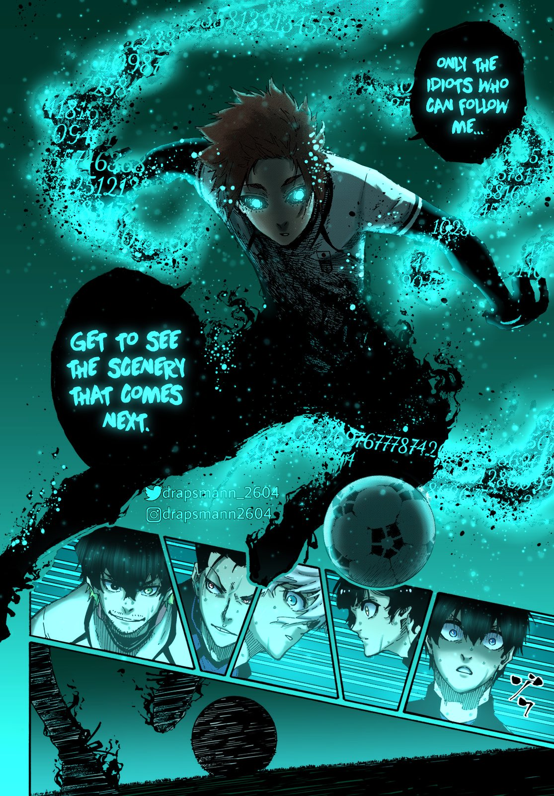
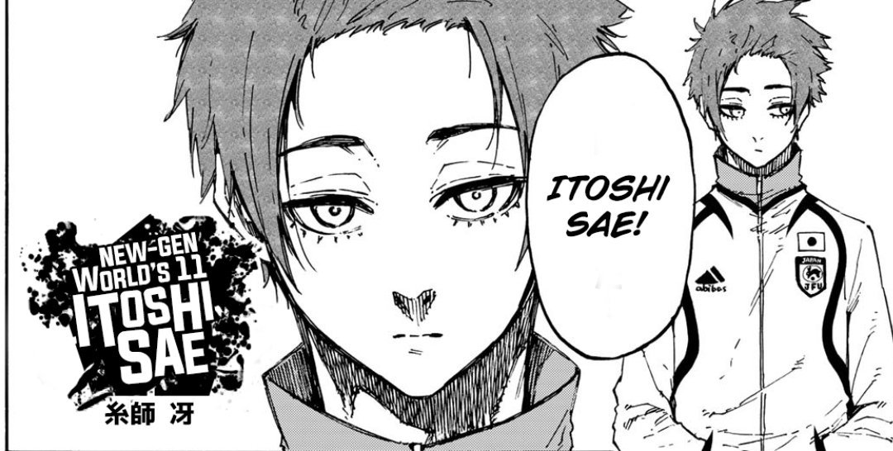
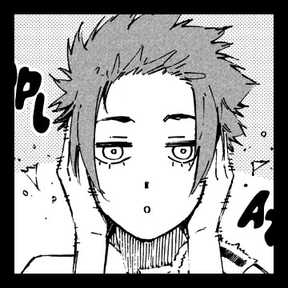
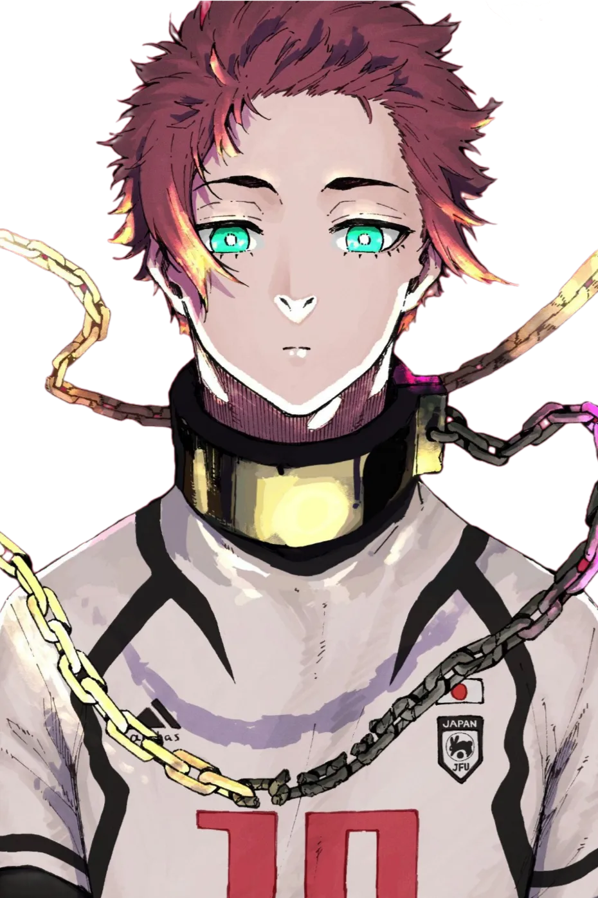

Itoshi Sae's Flow
25427817327289193892
A mental state where a person is fully immersed in an activity, feeling energized, focused, and involved.
Title Heading
Title description, Sep 2, 2017
Sae's Goal in Life
Sae's main goal before the start of the series was to become the best striker in the world, and in turn, the best player in the world, but after leaving Japan and experiencing the professional league in Spain, he changed his dream to becoming the best midfielder in the world after he realized how truly weak Japanese football is.
About Me
Sae Itoshi (糸いと師し 冴さえ Itoshi Sae?) is a prodigy football player, who is known as the best player in Japan. Sae is also a member of the New Generation World XI, as well as the Re Al youth team. He is the older brother of Rin Itoshi.
Popular Post
Follow Me
@Itoshi_Sae2453728172392743